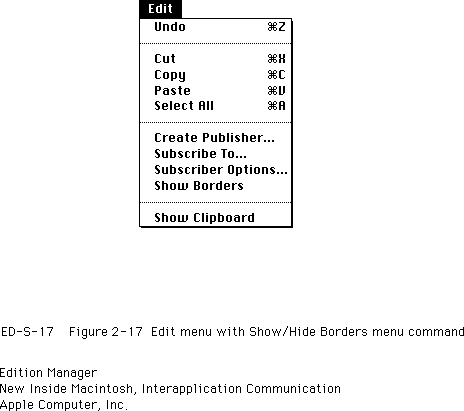
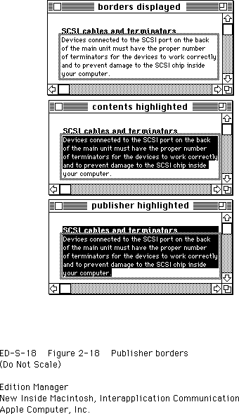
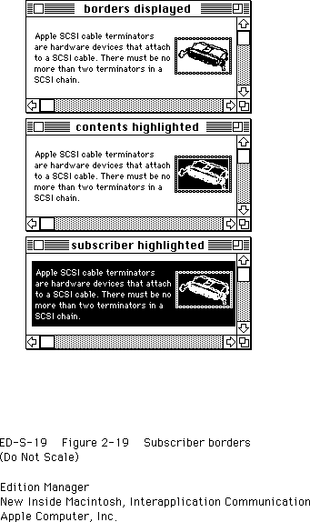
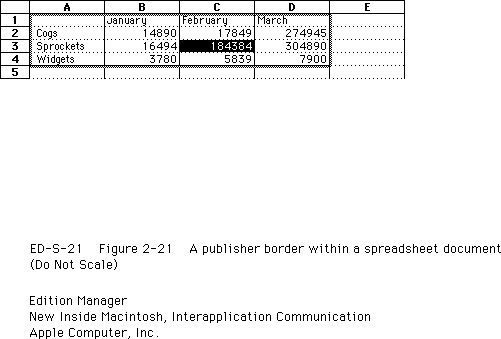
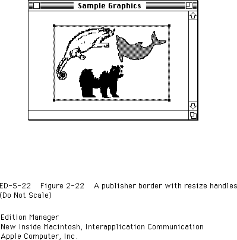
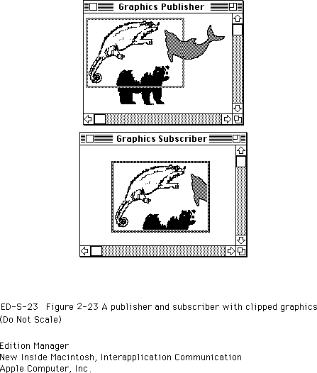
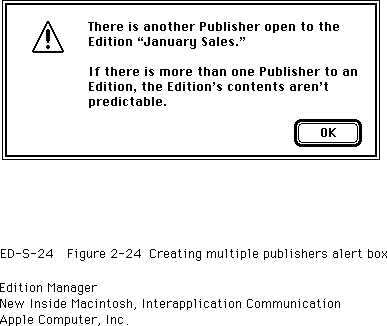
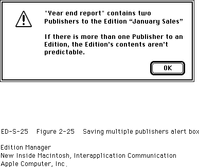

Legacy Document
Important: The information in this document is obsolete and should not be used for new development.
Important: The information in this document is obsolete and should not be used for new development.


Displaying Publisher and Subscriber Borders
Each publisher and subscriber within a document should have a border that appears when a user selects the contents of these sections. You should display a publisher border as three pixels wide with 50 percent gray lines and a subscriber border as three pixels wide with 75 percent gray lines. Separate the contents of the section from the border itself with one pixel of white space. To create your borders, you should use patterns, not colors. Depending on the user's monitor type, colors may not be distinguishable.In general, borders for publishers and subscribers should behave like the borders of
'PICT'graphics in a word-processing document. A border should appear when the user clicks the content area of a publisher or a subscriber and disappear when
the user clicks outside the content area of a section. You can also make all publisher
and subscriber borders appear or disappear by implementing an optional
Show/Hide Borders menu command.
Figure 2-17 displays the Edition Manager Show/Hide Borders menu command in the Edit menu.Figure 2-17 Edit menu with Show/Hide Borders menu command

Depending on your application, you may choose to include resize handles or similar components in your borders. See "Object-Oriented Graphics Borders" on page 2-56 for an example of resize handles.
Whenever a user selects a portion of a publisher or sets the insertion point within a publisher, you should display the border as 50 percent gray. A user can copy the contents of a publisher or subscriber without copying the section itself by selecting the data, copying, and then pasting the data in a new location. A user can cut and paste a selection that contains an entire publisher or subscriber, but you should discourage users from making multiple copies of a publisher. See "Duplicating Publishers and Subscribers" on page 2-58 for detailed information.
When the user modifies a publisher, your application should grow or shrink its border to accommodate the new dimension of the section.
You should display only one publisher border within a document at a time. If a cursor is inserted within a publisher that is contained within a larger publisher, you should display only the smaller, internal publisher border. If it is absolutely necessary to display all section borders within a document at the same time, you can create a Show/Hide Borders menu item.
You do not need to provide support for publishers contained within other publishers. If you do not, you should dim the Create Publisher menu command (to indicate that it is not selectable) when a user attempts to create a publisher within an existing publisher.
Figure 2-18 shows the recommended border behavior for publishers. The top window shows a publisher with its borders displayed. The middle window shows how the borders look when a user selects some of the contents of a section. The bottom window shows how the borders look when a user selects data within a document that includes a publisher section.

Figure 2-19 shows the recommended border behavior for subscribers. The top window shows a subscriber with its borders displayed. The middle window shows how the borders look when a user selects the contents of a section. The bottom window shows how the borders look when a user selects data within a document that includes a subscriber section.
Figure 2-19 Subscriber borders

If a user tries to select only a portion of a subscriber, you should highlight the entire contents of the subscriber. A user cannot edit the data in a subscriber. See "Modifying a Subscriber" on page 2-59 for detailed information.
If a user cancels a section using the publisher or subscriber options dialog box, your application should leave the contents of the section within the document, but you should be sure to remove the borders from this data, as it is no longer considered a section.
Generally, the appearance and function of publisher and subscriber borders should be the same across different applications. The following sections entitled "Text Borders," "Spreadsheet Borders," "Object-Oriented Graphics Borders," and "Bitmapped Graphics Borders" describe specialized features for publisher and subscriber borders in word-processing, spreadsheet, or graphics applications.
Text Borders
In word-processing documents, a publisher may contain other publishers. However, one publisher should not overlap another publisher. You should display only one publisher border at a time. If an insertion point is placed within a publisher that is encompassed by another larger publisher, you should display only the smaller internal publisher border.In exceptional cases, it may be necessary to display more than one publisher or subscriber border at a time. For example, a publisher may consist of a paragraph that includes a marker for a footnote. The data contained within the footnote should also be considered part of the publisher. When a user selects the paragraph, you should simultaneously display a border around the footnote.
The border of a publisher that contains text should be located between characters within the text. The insertion point, when placed on such a boundary, should gravitate toward the publisher. That is, a click in front (to the left) of a publisher border should place the cursor inside the publisher, so that subsequent typing goes inside the publisher. Clicking at the end (to the right) of a publisher border should also place the cursor inside the publisher.
Whenever two separate borders are adjacent, the boundary click should go in between them. This is also true for a border that is next to other nontextual aspects of a document, such as
'PICT'graphics or page breaks.When a user removes information from a publisher that contains text data, you should resize the border so that it becomes smaller. When a user adds information to the publisher, you should enlarge the border to accommodate the new text. The insertion point should remain within the publisher.
If a user highlights the entire contents of a publisher and then chooses Cut from the Edit menu, you should not delete the publisher border within the document. The user may intend to delete the existing publisher data and replace it with new data, or the user may want to move the entire publisher and its data to a new location. Figure 2-20 shows
this state.Figure 2-20 A publisher with contents removed
You should leave the cursor inside the small publisher border for further typing. If the user inserts the cursor in a new location (instead of typing data inside the existing border), you need to remove the empty publisher border from the document to allow the user to move the publisher. This effectively deletes the publisher from the document. If the user pastes the publisher that is currently held in the scrap, you should re-create its border. If the user cuts or copies other data from the document before pasting the publisher from the scrap, the publisher should be removed from the scrap.
Spreadsheet Borders
Borders around spreadsheet data or other data in arrays should look and behave very much like text borders. Figure 2-21 shows a typical border within a spreadsheet document.Figure 2-21 A publisher border within a spreadsheet document

Note that the border goes below the column headers (A, B, C, D) and to the right of the row labels (1, 2, 3, 4)--it should not overlap these cell boundaries. The border at the bottom and the border on the right side can be placed within the adjacent cells (outside of the cells that constitute the publisher).
Unlike borders in word-processing applications, borders in spreadsheet documents (or other documents with array data) can overlap. That is, a user can select a row of cells to be a publisher and an overlapping column of those cells to be another publisher. You should never display more than one publisher border at a time. When a user selects a spreadsheet cell that is part of more than one publisher, you should display only the border of the publisher that was last edited. (This can be accomplished by comparing the modification dates of the publishers.)
If it is absolutely necessary to display all section borders within a document at the same time, you can create a Show/Hide Borders command in the Edit menu to toggle all borders on and off.
When data is added to or deleted from a publisher that consists of a spreadsheet cell or other array, you should resize its border to accommodate the addition or deletion of data. A publisher should behave like a named range in a spreadsheet. For example, if a user cuts a row within a publisher that consists of a named range in a spreadsheet, you should shrink the publisher data and its border correspondingly.
When a user cuts a publisher and its entire contents within a spreadsheet document, the entire section should be held in the scrap. Do not leave an empty publisher border in a spreadsheet (as recommended for text borders). If a user attempts to paste a copy of an existing publisher, you should warn the user by displaying an alert box (see "Duplicating Publishers and Subscribers" on page 2-58).
Object-Oriented Graphics Borders
In an object-oriented drawing application, the publisher border should fit just around the selected objects.You can provide resize handles that appear with all drawing objects to allow the user to resize the border of a publisher. Figure 2-22 shows a publisher border with resize handles.
Figure 2-22 A publisher border with resize handles

An application can make publisher borders appear to float over the area the user publishes. The border acts like a clipping rectangle--anything within the border becomes the publisher. Figure 2-23 shows a publisher that contains clipped graphics and its subscriber in another application.
A user can create publishers and subscribers that overlap each other. Thus, borders may overlap and it may no longer be possible to turn on a particular border when the user clicks within a publisher. Drawing applications should provide a menu command, Show Borders, that toggles to Hide Borders. This command should allow users to turn all publisher and subscriber borders on or off.
Figure 2-23 A publisher and subscriber with clipped graphics

Bitmapped Graphics Borders
Creating a border around bitmapped graphics in applications is similar to doing so in object-oriented drawing applications. The border appears around the selected area. The user can create overlapping publishers and subscribers in bitmapped graphics applications. You need to provide a Show/Hide Borders command to allow users to turn all borders on and off.Duplicating Publishers and Subscribers
Whenever a user clicks a publisher or subscriber border, you should change the contents of the section to a selected state. You should discourage users from making multiple copies of a publisher and pasting them in the same or other documents, because the contents of the edition would be difficult or impossible to predict. Multiple copies of the same publisher also contain the same control block value. See "Creating and Registering a Section" on page 2-74 for detailed information on control blocks.When a user attempts to create a copy of a publisher that already exists, you should display an alert box such as the one shown in Figure 2-24.
Figure 2-24 Creating multiple publishers alert box

When a user attempts to save a document that contains multiple copies of the same publisher, display an alert box such as the one shown in Figure 2-25.
Figure 2-25 Saving multiple publishers alert box

If a user decides to ignore your alert box, your application should still save the document, but you should continue to display this error message every time the user saves this document.
A user can modify the contents of any duplicate publisher, but the contents of the edition will be whichever publisher was the last to write.
When a user chooses to copy and paste or duplicate a section, use the
HandToHandfunction (described in Inside Macintosh: Memory) to duplicate the section record and alias record. Set thealiasfield of the cloned section record to the handle of the cloned alias record and generate a unique section identification number for it. In addition, you should also place the section data, section record, and alias record in the scrap.Use the
RegisterSectionfunction (described in "Opening and Closing a Document Containing Sections" on page 2-22) to register the cloned section's section record.A user can select the contents of a publisher without selecting the border and copy just the data to a new location. In this case, the user has simply copied data (and not the publisher). Do not create a border for this data in the new location.